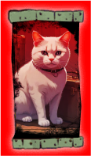

 |
From: Armstrong October 2, 2024 Ares Vallis, Mars Report: ARM.001 {Sol_000} Welcome to the studio. Here's the first entry in the ship's log. As we flew over Ares Vallis [Ares Vallis - is a large valley that appears to have been eroded by ancient flows of water. It is located in the Oxia Palus quadrangle, at 10.4N and 25.8 W (334.2 E)], we decided to make our first landing to capture the silent beauty of this place. The minimalist landscape inspired Platon and me to name the first track ‘Arrival’. There's something mystical about descending onto the Red Planet in a shuttle. Ideas emerge in unexpected places if you don’t interfere with them. We should probably start with the overall concept of the album. Platon and I didn't want to create something that has already been made, so we decided to mix genres. It's hard to say where it will go over time, but for now, we're listening to and drawing inspiration from the Tron: Legacy soundtrack (Daft Punk), Gorillaz, Overwerk, and a few soundtracks from films of the '70s and '80s.Se ya nextersol.
Later,
<> cat owl
|